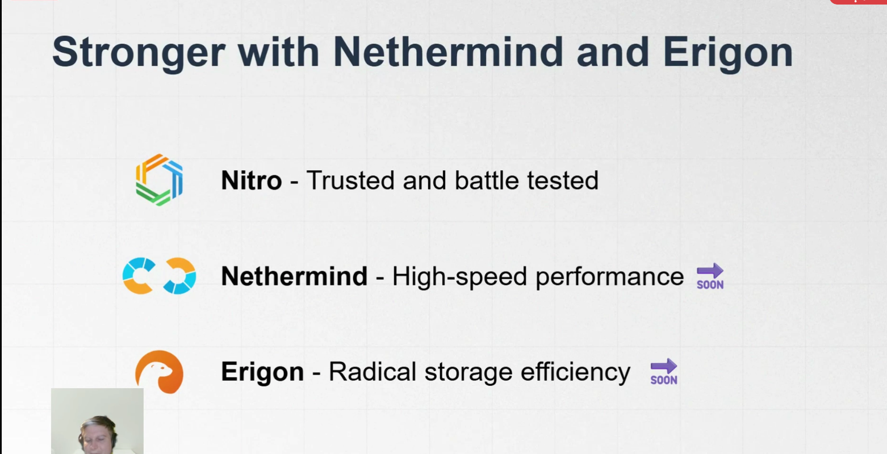

Kick off the Arbitrum Open Hourse
Author: Developer Evangelist at the Arbitrum Foundation Previously: Developer Relations at Scroll in Web3 since 2017
X: https://x.com/Swagtimus
The Modular L2 Stack
How do L2s win as Ethereum matures?
Arbitrum is not just an L2
what is exciting with Arbitrum?

Why Stylus
In EVM operates with 256 bit chunks. But with stylus you can take advantages of that wichi means huge efficienct..